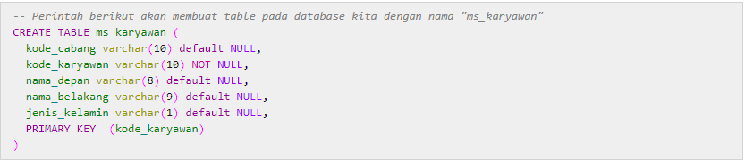
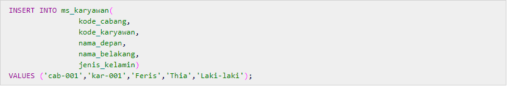

DML (Data Definition Lenguage)
dan
DML (Data Manipilation Lenguage)
DDL
Merupakan kumpulan perintah SQL yang digunakan untuk membuat, mengubah dan menghapus struktur dan definisi metadata dari objek-objek database. Seperti definisi yang telah dijelaskan di atas, DDL adalah kumpulan perintah SQL yang digunakan untuk membuat (create), mengubah (alter) dan menghapus (drop) struktur dan definisi tipe data dari objek-objek database. Objek-objek database pada yang dimaksud - pada MySQL - adalah sebagai berikut :
Database
Table
View
Index
Procedure (Stored Procedure)
Function
Trigger
Contoh :

DML
DML sendiri adalah kumpulan perintah SQL yang berhubungan dengan pekerjaan mengolah data di dalam table - dan tidak terkait dengan perubahan struktur dan definisi tipe data dari objek database seperti table, column, dan sebagainya. Beberapa perintah DML MySQL 5.0:
CALL
DELETE
DO
HANDLER
INSERT
LOAD DATA INFILE
REPLACE
SELECT
TRUNCATE
UPDATE
Contoh DML : Mengambil Seloruh Row Data dari table MS_KARYAWAN
Contoh DML : Memasukan data ke dalam table ms_karyawan
